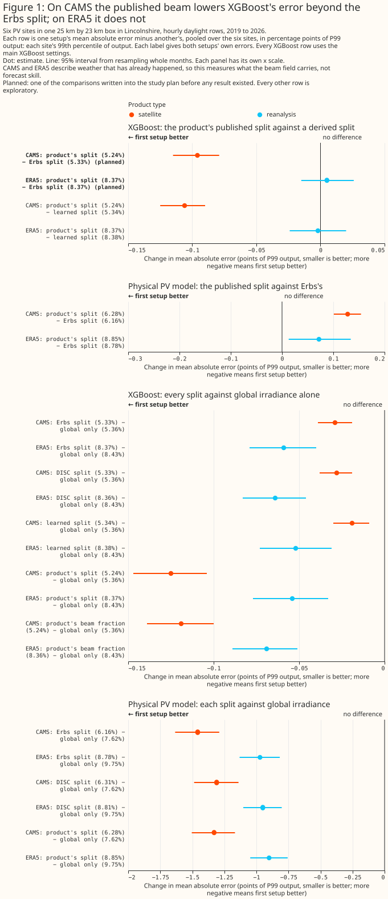
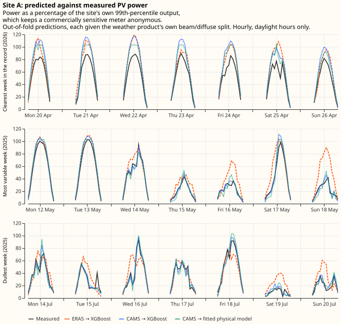
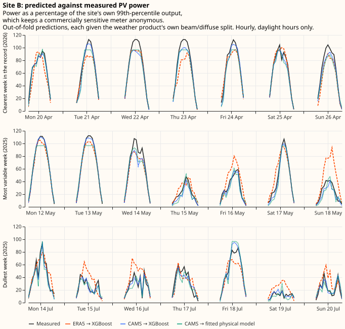
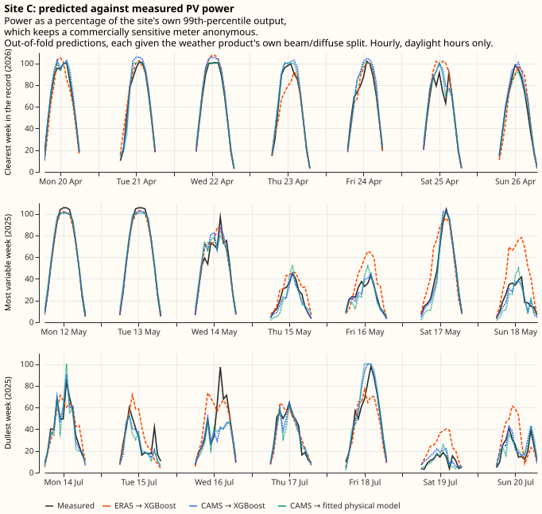
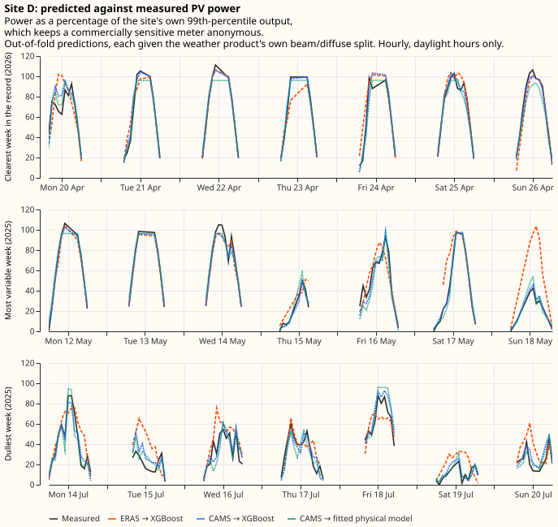
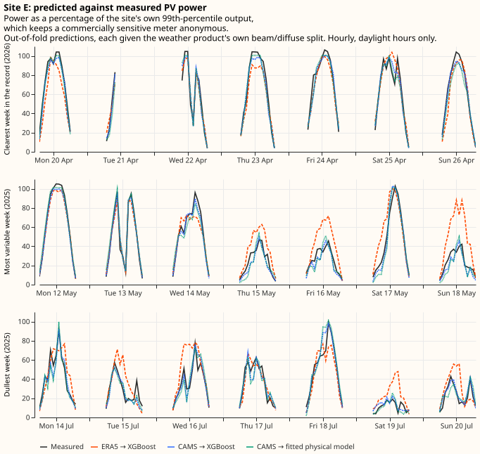
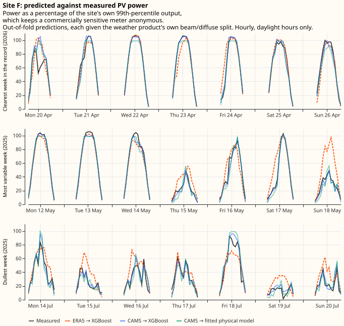
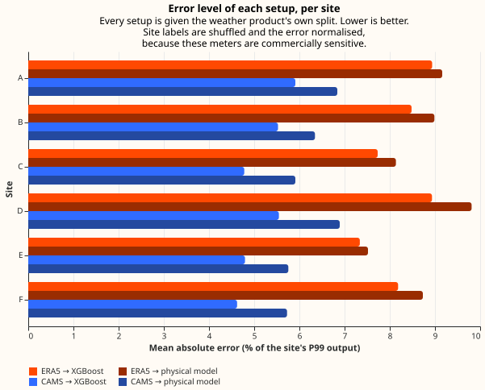
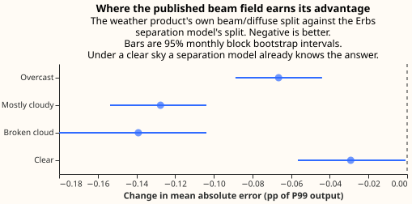

Does a weather product's beam/diffuse split help a PV forecast?
This study uses only Flexpectation's own data, and its purpose is to inform Flexpectation's choices. The study tests the beam/diffuse split only at the solar farms in Flexpectation's trial area in Lincolnshire. The study does not compare results across many regions or climates, so a result on this page may not hold elsewhere.
At six metered solar farms in Lincolnshire, a weather product's own direct-beam field made an XGBoost model's photovoltaic (PV) power estimate more accurate on a 5 km satellite retrieval, and made no detectable difference on a 31 km reanalysis. Every error on this page is a mean absolute error expressed as a percentage of each farm's own 99th percentile of output, written P99 output. A difference between two errors is in percentage points of P99 output, written "points", with its 95% interval in brackets. On the Copernicus Atmosphere Monitoring Service's satellite retrieval (CAMS), an XGBoost model given the published beam and diffuse irradiance has an error 0.096 points lower [0.079, 0.116] than an XGBoost model given the beam and diffuse that the 1982 Erbs formula derives from the total irradiance. The reduction is 1.8% of the 5.33% error left by the XGBoost model given the Erbs split. On ERA5, the European Centre for Medium-Range Weather Forecasts' (ECMWF's) reanalysis, the same difference is +0.005 points [−0.015, +0.026], which is not statistically significant at the 5% level. When XGBoost is refitted at shallower settings, run as a check on the main ones, the Erbs split does better than ERA5's own split, by 0.027 points [0.007, 0.047], which is statistically significant at the 5% level. ERA5's result is therefore best read as no benefit detected, not as proof that the published beam carries nothing. The evidence is 6 solar farms inside one 25 km by 23 km box, 7 years of hourly daylight readings, 2 irradiance products, and 2 families of PV power model.
Choosing the better irradiance product matters about 34 times as much as having the split at all. On the hours both products cover, moving from ERA5 to CAMS cuts XGBoost's error by 4.29 points, against 0.126 for the widest gap between two XGBoost models differing only in their beam and diffuse columns. The beam/diffuse split is therefore a question to settle inside the choice of irradiance product.

In Figure 1 each row is the error of one PV power model given one set of irradiance columns, minus the error of the same PV power model given another set, in points. Each label gives both errors. The top panel holds the comparison the experiment exists for, with XGBoost. The second panel holds the same comparison for the fitted physical PV model, which disagrees. The bottom two panels compare each split against global irradiance alone. Each panel has its own x scale.
How this page was made. The research question came from a human. Everything else — the code behind every result, the analysis, the figures, and the text — was written by Claude, Anthropic's AI model (for this page, Claude Opus 5, with later revisions by Claude Opus 5.5). A human has reviewed the figures and the text, and several independent Claude reviewers have checked the method, the evidence, and the prose adversarially.
Key findings
- The PV power models produce sane forecasts: XGBoost given CAMS reaches 5.24% of P99 output pooled across the six sites, and is the best of the four pairings of irradiance product and PV power model at every site.
- On CAMS the published beam beats the Erbs split by 0.096 points, statistically significant at the 5% level. On ERA5 no effect is detected at the main XGBoost settings.
- Adding beam and diffuse columns derived by a formula, which carry no new information, still improves XGBoost by 0.029 points, and the headline is measured against an XGBoost model that already has that improvement.
- The gain is information the published beam carries, not a better separation formula: a formula fitted on this data reproduces the published beam more than twice as faithfully as Erbs, and leaves the forecast 0.010 points worse.
- The CAMS finding holds at the shallower XGBoost settings, in every fold, at every site, and with the hours CAMS flags as unreliable kept. At the shallower XGBoost settings the Erbs split beats ERA5's own split.
- A fitted physical PV model reports the opposite sign: the published split raises its error, by 0.128 points on CAMS and 0.072 points on ERA5. On CAMS most of that disagreement comes from its conversion of the beam to the panel's plane, which magnifies beam errors when the sun is low.
- The published beam helps most under broken cloud and least under a clear sky: broken cloud is where the split is hardest to infer from the total.
- The published beam does not help in the hours the inverter is clipping, so clipping dilutes the headline rather than creating it.
- Moving from ERA5 to CAMS cuts XGBoost's error by 4.29 points, or 44% relative.
- XGBoost beats the fitted physical PV model by 1.05 points on CAMS, and calibrating the physical PV model with XGBoost closes most of that gap.
- The six sites' biases drift in different directions over the years, and tracking the drift would lower every XGBoost model's error without changing any comparison between them.
Introduction
Knowing how an hour's sunshine divided between direct beam and diffuse light can, in principle, make a PV power model predict that hour's power more accurately than knowing only the total. A few weather products publish that division. Most publish only the total, including the forecast feed this project runs on. Getting hold of a product that publishes the division costs either money or engineering time. This page measures what the division is worth before anyone pays for it.
The feed this project runs on carries no direct beam
The ECMWF ensemble feed this project ingests carries the total short-wave irradiance and no direct-beam component, so a physically-grounded PV model has to derive the split rather than read it. The feed is ECMWF's ensemble forecast, ENS, which runs ECMWF's weather model 51 times from slightly different starting states.
Adding the beam to this feed is not a matter of Dynamical.org, the feed's supplier, widening a
variable list. Dynamical.org build the feed from ECMWF's free open-data subset, which does not
carry fdir — the ECMWF archive's name for the direct beam on a horizontal surface. ECMWF's full
Real-time Catalogue does carry fdir, so the obstacle is which ECMWF feed the data comes from.
What taking fdir from ECMWF directly
involves,
licence and delivery charges included, is set out on the data-sources page. ECMWF have published no
plan to add the direct beam to the free
subset.
Four routes to a split remain, and each costs money or engineering effort. The split can come
from ECMWF's own delivery of fdir, from a different weather model whose free feed already carries
a direct beam, from a separate irradiance source bought or ingested alongside the forecast, or from
a separation model this project runs locally on the total the feed already carries. No route is
worth paying for before knowing what the split is worth.
Beam, diffuse, and global irradiance, and the two ways to get the split
Sunlight reaches a horizontal surface two ways. The direct beam arrives in a straight line from the sun's disc; the diffuse arrives scattered by air, cloud, and aerosol from across the whole sky. The sum of beam and diffuse is the global horizontal irradiance, which is the one irradiance field every product this page uses publishes, and the only irradiance field some of them publish. "The split" throughout this page means how that total divides between beam and diffuse.
The split matters to a tilted panel because the panel responds to the two components differently. A panel tilted towards the south receives the beam reduced by the cosine of the angle between the beam and the panel's normal, and receives the diffuse almost unchanged, because diffuse light arrives from all directions at once. Transposition is the name for converting horizontal fluxes into the flux on the panel's own plane, and transposition needs the split. Two hours carrying the same global irradiance can put substantially different power into the same panel, depending on how much of that total was beam.
A PV power model gets the split one of two ways: the weather product publishes it, or a separation model estimates it. A separation model is an empirical formula that takes the global horizontal irradiance and the sun's position and returns the beam and diffuse components. The Erbs et al. (1982) correlation and the Direct Insolation Simulation Code (DISC) are two published examples, and both run on nothing but those two inputs. The question this page settles is whether a published beam field carries information for a PV power model that a separation model could not have worked out for itself.
Two irradiance products: a reanalysis from two suppliers, and a satellite retrieval
The page asks the beam question on two products that resolve cloud at very different scales. ERA5 is ECMWF's reanalysis: a physical weather model re-run over the past and pulled towards the observations of the time. CAMS infers cloud from satellite images.
| Source | What it is | Lead | Grid | Covers all of Great Britain? | History read here, and archive start | Available after |
|---|---|---|---|---|---|---|
| ERA5 via the Copernicus Climate Data Store | ECMWF's global reanalysis. ERA5's archive names the total short-wave field ssrd and the direct component fdir |
1 to 12 hours, from the reanalysis's own short forecasts | ~31 km, hourly | yes | September 2019 to September 2026; archive from 1940 | about 5 days |
| ERA5 via Open-Meteo's mirror | The same reanalysis, the same two fields, served in about a minute rather than most of a night | as above | identical grid and hours | yes | as above | as above |
| CAMS radiation service | The Copernicus Atmosphere Monitoring Service's satellite retrieval: cloud inferred from the Meteosat geostationary satellites, published at each meter's own coordinates | no forecast step | ~5 km cloud field, point delivery | yes | September 2019 to September 2026; archive from 2004 | about 1 day |
The lead, archive start, and delay columns are taken from the sunshine study's product table, which cites each service's own documentation.
The reanalysis and the satellite retrieval are different measurement systems rather than two routes to one answer, which is why the beam question is asked separately on each. ERA5 averages its cloud field over roughly 31 km and lands each meter in a grid cell whose centre can be 13 km away. The CAMS service retrieves cloud at around 5 km and interpolates to the meter's own position. Running the same comparison on both is what separates "the split carries no information" from "this grid has already smoothed the beam away".
The "5 km against 31 km" comparison is between the two cloud fields, not between like-for-like grid spacings. The CAMS point service interpolates to the coordinates asked of it rather than publishing a grid, so it has no grid spacing to compare. Every resolution figure on this page describes how finely a cloud field was resolved before delivery.
What the experiment measures, and what it does not
Both irradiance products here are analyses of what the weather did, not forecasts of what it will do, so this page measures the information content of the beam field rather than forecast skill. A forecast of the beam would carry its own error on top, and nothing measured here bounds that error. A result saying the published beam helps is therefore an upper bound on what a forecast beam could deliver. A result saying the published beam does not help rules the forecast case out as well, so long as forecasting a beam cannot make it more informative than the analysis it is forecasting — which is an assumption rather than a measurement made here.
The finding is about one micro-region over 2019 to 2026, and about PV power models that predict power from irradiance at a single site. It is not a statement about the physics of photovoltaic generation, where the value of the split is not in doubt — the transposition described above is standard.
Data and methods
Six metered solar farms, 7 years, hourly
The power readings are half-hourly metered output from six solar farms in National Grid Electricity Distribution's (NGED's) Lincolnshire licence area, running from September 2019 to September 2026. The readings are averaged to the hourly grid the irradiance products use. The daylight filter keeps only hours whose midpoint sun is above the horizon: 128,033 site-hours on the satellite source and 149,984 on the reanalysis. Keeping every hour down to zero elevation is a definition of daylight that cannot have been chosen to flatter a result. That definition also dilutes every percentage below with twilight rows no PV power model can get wrong.
Every figure and table on this page is normalised, and the sites carry shuffled letters rather than names, because a single solar farm's output is commercially sensitive. NGED has asked that generator data leave the project only anonymised. Error and power are therefore expressed as a percentage of each site's own 99th percentile of absolute metered output — written P99 output below — rather than in megawatts. A difference between two errors is in percentage points of P99 output, written "points", and a bracketed pair after a figure is its 95% interval. The site labels A to F come from a fixed permutation that no table on this page can be used to invert. The unit is not registered capacity, which this experiment never reads.
The clearness index is the standard way of saying how cloudy an hour was, and this page sorts hours by it. The index is the global horizontal irradiance divided by the extraterrestrial horizontal irradiance — what the same horizontal surface would receive with no atmosphere above it, which follows from the sun's position and the date alone. The ratio is the share of what the top of the atmosphere offered that actually arrived, so it runs near zero under thick overcast and approaches one under a clear sky.
Open-Meteo's mirror serves ERA5's own direct-beam field
Before any result could be read as an ERA5 result, the mirror had to be proved to serve ERA5's own
fdir rather than a separation model's estimate of it. Otherwise the XGBoost model given the
"published" split would be a copy of the XGBoost model given a derived one, and a null result would
be guaranteed by construction rather than measured. The two downloads were compared hour by hour
over every hour and every cell both cover: 20 grid cells across the whole requested box, night
included, for 1,232,160 cell-hours. The box is deliberately much wider than the meters' own
footprint, because a box drawn tightly round six meters would say where they are, and this
repository is public. The mean absolute difference is 0.15 W m⁻² on the total and 0.13 W m⁻² on the
beam, against Open-Meteo's own rounding of 1 W m⁻². Fewer than 0.12% of hours differ by more than
that rounding. The mirror carries the same fields.
Cleaning
Three filters run before any PV power model sees a row. Each filter is blind to the beam/diffuse split, so no filter can favour a published split over a derived one.
- Multi-day zero runs and impossible spikes. The filter drops any run of exactly-zero hourly power lasting at least 24 hours, together with readings above 1.5 times the site's own P99 output. A 24-hour run of exact zeros is not a weather response whatever caused it — an outage, a curtailment instruction, or a tripped inverter all qualify — so the row says nothing about how irradiance becomes power. Together the zero-run and spike rules remove 1.5% of hourly power readings.
- False zeros inside a bright hour. An hour whose global irradiance exceeds 100 W m⁻² but which contains an exactly-zero half-hour is treated as a meter dropout rather than a dim hour. That filter removes a further 3.7% of the daylight rows reaching that stage.
- Hours the satellite service flags as unreliable. On the CAMS source only, the build drops hours the service itself flags as less than 90% reliable. Every flagged hour is a daylight hour. Re-running the whole build with the flag off takes the daylight record from 128,033 site-hours to 150,332, so the filter drops about 15% of the rows. Those hours are much darker than the ones kept, averaging 33 W m⁻² of global irradiance against 285, and 3.5% of P99 output against 36.1%.
Because that third filter is a choice rather than a repair, the whole experiment was also re-run keeping every hour the service delivers. The re-run moves the relative effect from 1.80% to 1.74%, and the rest of the check is below.
Three faults in NGED's own feeds had to be settled before the rows were usable
The power timestamps ran half an hour late until March 2026, one site is curtailed under active network management, and one site spent its first 8 months being commissioned. Each of the three faults determines which rows are scorable and what those rows mean, and each was settled from NGED's own records rather than assumed. The evidence sits in an appendix, because it is forensics on one network operator's feeds rather than part of the measurement this page reports.
Two model families: a gradient-boosted tree and a fitted PV model
The split's value is measured with two PV power models, called instruments below, and the first is XGBoost: one XGBoost model per site, given the irradiance columns as features and left to discover what to do with them. That XGBoost model predicts a single number. A second XGBoost model is fitted beside it with a multi-quantile objective. XGBoost therefore also produces a predicted distribution for every set of inputs, and can be scored on the continuous ranked probability score as well as on mean absolute error.
The second instrument exists because a null result from XGBoost is ambiguous between "the split carries nothing" and "XGBoost could not use it". It is a five-parameter physical PV model — panel tilt, panel azimuth, capacity, an inverter clipping limit, and a temperature coefficient — fitted per site on each training fold by a Powell optimiser from eight starting points, one fixed and seven random. Unlike XGBoost, the physical PV model is given the transposition: it projects the beam onto the fitted plane and adds the diffuse under an isotropic-sky assumption — an evenly bright sky, with no extra brightness near the sun's disc — then scales by capacity, applies the temperature coefficient, and clips. The split therefore enters the physical PV model at the one place physics says it belongs, so a null from the physical PV model cannot be blamed on the physical PV model failing to find the transposition.
The setups differ only in which irradiance columns XGBoost is given
A setup is one configuration under test: the same PV power model, the same rows, and the same settings, differing from every other setup only in which irradiance columns it is given. A contrast is the difference in error between two setups, taken row by row on rows they both score.
Every setup has identical rows, identical folds, identical seeds, identical settings, and identical
non-irradiance features — solar zenith angle and azimuth, extraterrestrial horizontal irradiance,
air temperature, hour of day, and day of year. Nothing in that list says which year or which month
of the record an hour falls in: hour of day and day of year are both cyclic, and no PV power model
is ever given the %Y-%m label the folds and the bootstrap are cut on. No setup can therefore track
a plant that degrades, which is what keeps the comparison with the physical PV model fair, because
the physical PV model's parameters carry no time trend either. Only the irradiance columns change.
Every beam and diffuse column among them is a flux onto a horizontal plane rather than a direct
normal flux, which is a beam measured on a plane held perpendicular to the sun's rays. No contrast
here therefore confounds a change of units with a change of content.
| Setup | What the XGBoost model is given |
|---|---|
| A — global only | Global horizontal irradiance |
| B — Erbs | Global irradiance, plus the beam and diffuse fluxes the Erbs correlation derives from it |
| C — the weather product's own split | Global irradiance, the published beam, and the diffuse left over |
| D — direct fraction | Global irradiance and the published beam's share of it |
| B-DISC | Setup B with the DISC correlation in place of Erbs |
| B-LEARNED | Setup B with a separation model fitted on this data in place of Erbs |
Setup C against setup B is the comparison the experiment exists for, and that contrast was planned. Giving the geometry to every setup is deliberate: a fixed-tilt array's sensitivity to the split is partly a function of sun position, which a gradient-boosted tree can absorb from the geometry columns. Setup A is therefore made as strong as it can be, and any advantage setup C shows is a lower bound.
Setup B-LEARNED exists because setup C could beat setup B for two reasons that carry opposite decisions. The published beam may hold information no function of global irradiance and solar geometry can recover, in which case the field is worth asking a supplier for. Or the weather product may simply publish a better separation model than a correlation fitted in 1982, in which case the same gain is available from a separation model run locally. Erbs alone cannot tell those two explanations apart. Setup B-LEARNED can: its beam is a prediction of the weather product's own direct fraction from exactly setup A's feature set. Every value that column carries is therefore a function of what setup A already holds. If setup C still beats setup B-LEARNED, the advantage is information rather than representation.
Setup B-LEARNED withholds by calendar month rather than by fold, because the obvious construction leaks across sites. Folds are cut inside each site's own span, so one fold number is a different calendar period at each site. A separation model that merely dropped the rows carrying that fold number would still train on other sites' rows at the scored fold's own hours. On the reanalysis those other sites are the same grid cell. The withholding is therefore by calendar month, and it covers the training rows as well as the scored fold, through an inner cross-validation that withholds each training fold's own months in turn. Without that, setup B-LEARNED's beam column would be sharper on the rows it trains on than on the rows it is scored on, the XGBoost model would learn to trust the column more than the scored rows deserve, and the setup would lose for a reason that has nothing to do with the split.
Two controls
Setup B is a negative control the experiment already contains. Erbs reads global irradiance and solar geometry and nothing else, all of which setup A already holds. Setup B therefore cannot carry information setup A lacks. Whatever B − A comes out as is this pipeline's reading on a feature set known to be uninformative — and, as the results show, B − A is not zero.
A positive control shows the instruments can detect an effect of this kind when there is one to detect. The same setups are run against a synthetic target built by transposing the true split onto a tilted plane, where the split must help by construction, and setup C beats setup B-LEARNED on that target by 0.17 points [0.14, 0.20] — about 1.6 times the size of the effect found on real power. The synthetic target is built outside the physical PV model's own family of shapes on purpose: each site gets its own tilt and azimuth, none of them the values the optimiser starts from, and the sky diffuse is transposed by the Hay-Davies transposition model, which treats the sky as brighter near the sun, while the physical instrument assumes an evenly bright sky.
Folds, seeds, and why the intervals are wider than the row count suggests
Training on both sides of the test block is the right choice for this experiment, because the question is about information content rather than about forecasting forward in time. Each site's span is cut into five contiguous blocks of whole months, and each block is scored by a PV power model fitted on the other four. Every fit is repeated at three random seeds, because XGBoost's own sampling makes a single fit a noisy estimate of what a setup can do.
XGBoost runs at two fixed sets of hyperparameters, neither tuned, and every number on this page uses the main XGBoost settings unless it says otherwise. The main XGBoost settings are trees 6 levels deep, a learning rate of 0.05, and 500 boosting rounds. The shallower XGBoost settings (a check) are trees 4 levels deep, a learning rate of 0.03, 1,200 boosting rounds, and heavier regularisation. A single set of hyperparameters can favour one setup by accident, because a wider feature set changes how much a fixed number of rounds overfits. The shallower XGBoost settings (a check) therefore test whether an ordering of the setups comes from the features rather than from the settings. They are run on setups A, B, C, and B-LEARNED, the setups the headline and the learned-split comparison rest on. Tuning either set per setup would let the tuner's own noise decide which setup wins, so neither set is tuned.
Six meters inside a 25 km by 23 km box share their weather, so the effective sample size is the number of independent weather episodes rather than the number of site-hours. On the reanalysis the effective sample is smaller still: the six sites fall inside only two ERA5 grid cells, and within each group the global irradiance is bit-identical. The per-site rows are two irradiance series against six power targets. Every interval quoted below therefore comes from a block bootstrap over whole calendar months, with all six sites' rows inside each block, and both setups are resampled on the same months so the comparison stays paired. Each resample also draws one of the three seeds.
One contrast is planned, and every other number on this page is exploratory. A planned contrast was written into the study plan before any result existed: here, setup C against setup B at the main XGBoost settings. A contrast is statistically significant at the 5% level when its 95% interval does not contain zero. The month-resampled test covers the month-to-month weather and the fitting seed. The test does not cover differences between generators, because the same six sites appear in every resample. Among the many exploratory rows on this page, about 1 in 20 of those with no real effect behind them would reach significance at the 5% level by chance alone.
Results
The models work
Before any contrast of a tenth of a percentage point is worth reading, the pipeline has to be seen producing a sane forecast. The charts below show out-of-fold predictions, one figure per site, across 3 weeks: the clearest week in the record, the most variable, and the dullest. The 3 weeks were chosen by clearness index rather than by eye.






The error levels those predictions sit at, per site and per pairing of irradiance product and PV power model:

| Site | ERA5 → XGBoost | CAMS → XGBoost | ERA5 → physical | CAMS → physical |
|---|---|---|---|---|
| A | 8.94 | 5.91 | 9.16 | 6.84 |
| B | 8.48 | 5.53 | 8.99 | 6.34 |
| C | 7.73 | 4.78 | 8.14 | 5.91 |
| D | 8.93 | 5.55 | 9.81 | 6.89 |
| E | 7.34 | 4.80 | 7.52 | 5.76 |
| F | 8.18 | 4.62 | 8.73 | 5.73 |
| Pooled | 8.37 | 5.24 | 8.85 | 6.28 |
Each cell is the mean absolute error as a percentage of that site's P99 output, with every pairing given the weather product's own beam/diffuse split, over all the hours that source covers. The best pairing at each site is in bold, and it is the same pairing at all six. Site E is much the shortest series, at 5,496 satellite site-hours against 19,334 to 25,774 for the other five sites, and it is not the worst-scored of the six. On the satellite source it sits third for XGBoost and second for the physical PV model, because holding every prediction to the export cap — which is what scoring a curtailed hour fairly requires — takes the network operator's instructions out of its error.
The clearest week is where a per-site bias is largest, which is why two of its charts look worse than the error levels above suggest. A bias in a fitted capacity scales with output, so it is at its widest on the brightest hours of the record. In the week beginning 20 April 2026 XGBoost given CAMS runs +16.0% of P99 output at site A and −4.5% at site B, against +0.08% and +0.11% over their whole records. Site B's own peak that week reaches 113% of the value its error is normalised by, so that chart is XGBoost meeting the highest output site B ever produced.
Under-prediction at the top of a site's range is what a mean-absolute-error objective produces, and it is not a sign the capacity denominator is wrong. Minimising absolute error targets the conditional median rather than the mean, and the top decile of measured output is where the residual distribution is most one-sided. Pooled across the six sites the mean signed error runs from +2.3% of P99 in the lowest decile of output to −4.1% in the highest. The denominator cannot cause the under-prediction, because no PV power model on this page is told the capacity: XGBoost predicts megawatts, and the physical PV model's capacity is a free parameter. Normalising by the 99.9th percentile or by the highest reading instead moves the headline contrast from −0.096 to −0.088 and −0.086 points, and leaves the relative effect at 1.80% in every case. Choosing a different denominator changes the units and nothing else.
One site drifts across the record, and the paired design absorbs the drift. At site A the mean signed error moves from −2.3% of P99 output in 2023 to +4.1% in 2026, so an XGBoost model fitted mostly on earlier years increasingly overpredicts the later years. That overprediction is visible as the gap in the clearest-week panel above, which falls in April 2026. Panel degradation would look like that drift, and so would a generator turning itself down against negative prices, which site A is free to do because no network operator's instruction binds it. The data here cannot separate the two. The drift does not touch any contrast below, because every setup is scored on the same rows and the bootstrap differences them row by row before resampling. What the drift does bear on is estimating a generator's effective capacity, taken up below.
The published beam field helps on the satellite retrieval, not on the reanalysis
On the satellite retrieval the weather product's own split beats the Erbs split by 0.096 points of P99 output, or 1.8% relative, statistically significant at the 5% level. On the reanalysis the same contrast is +0.005 points, not statistically significant at the 5% level.
| Contrast | CAMS (5 km) | ERA5 (31 km) |
|---|---|---|
| C − B — the weather product's split against Erbs | −0.0962 [−0.1155, −0.0793] | +0.0054 [−0.0153, +0.0257] |
| D − B — the same beam as a fraction of the total, against Erbs | −0.0897 [−0.1075, −0.0735] | −0.0097 [−0.0301, +0.0101] |
| C − B-LEARNED — against the fitted separation model | −0.1058 [−0.1245, −0.0899] | −0.0020 [−0.0239, +0.0198] |
| B-LEARNED − B — a better separation model, on its own | +0.0096 [+0.0032, +0.0162] | +0.0074 [−0.0086, +0.0241] |
| B − A — the negative control | −0.0289 [−0.0386, −0.0194] | −0.0595 [−0.0785, −0.0405] |
| B-DISC − A — a second correlation, same two columns | −0.0281 [−0.0376, −0.0189] | −0.0641 [−0.0832, −0.0464] |
| C − A — the weather product's split against global alone | −0.1251 [−0.1472, −0.1043] | −0.0541 [−0.0768, −0.0327] |
Each cell is the change in mean absolute error, in points of P99 output, for XGBoost. Negative favours the first setup. Bold marks the two contrasts the page's conclusion rests on. Figure 1, at the top of the page, plots these contrasts.
Re-encoding alone improves this pipeline, and the headline is measured on top of it
Setup B beats setup A by 0.029 points, statistically significant at the 5% level, even though setup B's extra columns are a deterministic function of what setup A already holds. A feature set that carries no new information should score no better, so the pipeline is reading a gain of about a third of the headline effect from pure re-encoding. The explanation is not information but representation: XGBoost's number of boosting rounds is fixed, and two columns of a physically meaningful shape let XGBoost find splits it would otherwise have to approximate. Nothing in the design prevents that re-encoding gain, and any result of this size has to be read against it.
Three facts show the headline is measured on top of that floor rather than being another instance of it. First, setup B-DISC — a different published correlation in the same two columns — lands at −0.028 against setup A, within 0.001 of Erbs, so the re-encoding gain barely depends on which correlation fills the columns. Second, setup B-LEARNED lands at −0.019 against setup A and at +0.010 against setup B, so the gain does not merely stop growing as the split gets more accurate, it reverses slightly. Third, and decisively, the headline contrast is C − B, measured against a setup that already carries the re-encoding. The 0.096 points sit on top of a representation effect that has already stopped growing.
The gain is information the published beam carries, not a better separation formula
A separation model fitted on this data reproduces the published beam more than twice as faithfully as Erbs does, and the forecast gets no better for it. Setup B-LEARNED leaves 4.6% of the published direct fraction's variance unexplained against Erbs's 9.5%, and that extra fidelity leaves the forecast 0.010 points worse, statistically significant at the 5% level, while the same contrast on the continuous ranked probability score is not. The published field itself cuts error by 0.096 points. So what the published beam is worth is not a better estimate of the same quantity.
A diagnostic run before the setups agrees, and puts the advantage in the 4.6% of the direct fraction's variance that setup A's features cannot reach. Out of fold, an XGBoost model given setup A's own features predicts 95.4% of the variance of the satellite product's direct fraction. The diagnostic withholds by calendar month across every site, as setup B-LEARNED does and for the same reason, and the two agree to a tenth of a percentage point.
A better-tuned separation model might shrink the contrast, but probably not by much. Setup B-LEARNED is only one gradient-boosted model at the XGBoost power model's own settings, so a harder-tuned separation model could close more of the remaining 4.6%. Power accuracy is close to flat in split fidelity over the whole range from Erbs to B-LEARNED, though, which is what makes a further gain unlikely rather than impossible.
What the result survives
The satellite finding holds under each of the checks below. It reproduces at the main and the shallower XGBoost settings (−0.096 and −0.072), on the continuous ranked probability score as well as mean absolute error, in 5 of 5 folds, and at every solar-elevation band. Seed-to-seed spread is 0.003 points against a 0.096-point effect. All six sites show the effect individually, each statistically significant at the 5% level, from −0.066 [−0.113, −0.021] at site E on much the shortest record to −0.120 [−0.151, −0.092] at site A.
The finding also survives changing how the beam is handed to XGBoost. Setup D gives XGBoost the published beam as a share of the total rather than as a flux beside the diffuse, which is the same information in a different shape. Setup D reaches −0.090 [−0.108, −0.074] against setup B on the satellite source and −0.010 [−0.030, +0.010] on the reanalysis: the same effect on one source and the same null on the other. The negative control's gain is a property of one column layout, so an effect that reappears under a second layout is unlikely to be the same kind.
The satellite finding also survives keeping the hours the service flags as unreliable, which is the check that matters most, because those hours are about 15% of the daylight record and dropping them was a choice. Re-run over all 147,913 site-hours rather than the 125,936 that pass the flag, the experiment gives a headline contrast of −0.083 [−0.098, −0.069], against −0.096 [−0.116, −0.079] on the filtered set. The absolute figure shrinks because adding 22,000 much darker hours lowers every setup's error — setup B falls from 5.33 to 4.74% of P99 output — while the relative effect barely moves, at 1.74% against 1.80%. Setup B-LEARNED against setup B behaves the same way on the wider set, at +0.000 [−0.005, +0.005], not statistically significant at the 5% level.
The reanalysis null is not an artefact of the mirror or of the row set, but it does not survive the shallower XGBoost settings. The Copernicus download reproduces the Open-Meteo result to the third decimal (+0.005 against +0.005), and the null survives restriction to the hours the satellite source also covers. At the shallower XGBoost settings, though, the Erbs split beats ERA5's own split by 0.027 points [0.007, 0.047], statistically significant at the 5% level. The limitations set out what that leaves for the reanalysis result.
The physical model disagrees, and is not a second opinion
On the same rows the physical PV model reports the opposite sign: the weather product's own split is worse than the Erbs split, by 0.128 points [+0.101, +0.154] on the satellite source and by 0.072 points [+0.013, +0.134] on the reanalysis, in 4 of 5 folds there. Both reanalysis figures are exploratory, and the rest of this section examines the satellite source. Each physical setup also fits its own panel geometry, and the setup given the weather product's split settles on a tilt 2.5 to 11.5 degrees shallower than the setup given Erbs, so the obvious suspicion is that the two setups differ in more than the beam field — which the XGBoost setups never do.
That suspicion is wrong: holding the geometry fixed makes the disagreement larger, not smaller. Every physical setup was refitted with the tilt and azimuth held at the values the Erbs setup settled on for that site and fold. The setups then differ only in their beam and diffuse columns, exactly as the XGBoost setups do. The contrast moves from +0.128 to +0.147 [+0.094, +0.202], and the DISC setup's from +0.148 to +0.236. So the physical PV model really does score lower with the Erbs beam than with the published beam, and the geometry it fits is not what produces that ordering.
What does separate the two instruments is the transposition, and it shows up where the sun is low. The physical PV model divides the horizontal beam by the cosine of the zenith angle to get the direct normal irradiance, which magnifies a beam error without limit as the sun approaches the horizon, and the daylight filter keeps rows down to zero elevation. XGBoost never performs that division. Below 10 degrees of elevation the physical PV model's ordering of the setups reaches +0.56 points, against +0.00 to +0.17 in the three bands above it, while XGBoost's contrast keeps the same sign in all four bands. The division therefore explains most of the disagreement rather than all of it: the physical PV model still leans towards Erbs in the bands where the sun is high.
So the physical instrument answers "which beam field survives being divided by the cosine of the zenith angle and fed to a five-parameter PV model with an evenly-bright sky", which is a different question from the one XGBoost answers. Erbs returns a smooth function of the clearness index, and the published beam varies more sharply hour to hour; a division that grows without bound near the horizon punishes the sharper field. The physical PV model is a misspecification probe rather than a second reading of the same quantity, so the right response is to report what each instrument measured rather than to reconcile the signs.
The published beam helps most under broken cloud
The satellite advantage is at its smallest under a clear sky and concentrates where cloud makes the split uncertain. That is the shape an information account predicts. Under a clear sky almost all the irradiance is beam and the direct fraction follows from the sun's position, so a separation model already reproduces the direct fraction. Under broken cloud two hours with the same total can carry very different beam, depending on whether the sun's disc happens to be covered.

| Sky condition | Clearness index | C − B | Relative | Hours |
|---|---|---|---|---|
| Overcast | below 0.2 | −0.0665 [−0.0888, −0.0440] | −2.05% | 19,020 |
| Mostly cloudy | 0.2 to 0.4 | −0.1275 [−0.1536, −0.1038] | −2.61% | 33,845 |
| Broken cloud | 0.4 to 0.6 | −0.1390 [−0.1799, −0.1038] | −2.21% | 39,359 |
| Clear | above 0.6 | −0.0292 [−0.0565, −0.0008] | −0.49% | 32,590 |
All four bins are measured on the CAMS satellite source, with XGBoost. The bins exclude rows whose sun sits below 5 degrees of elevation, because the clearness index divides by a quantity that goes to zero at sunrise and is numerically unstable there. That exclusion is why these bins total 124,814 site-hours rather than the full 125,936.
The gain concentrates in the two middle bins, and the reanalysis shows nothing in any of the four. Under thick overcast the effect shrinks again, as it must when there is almost no beam left to know about, leaving about 0.13 points in each of the two middle bins. On the reanalysis the contrast is statistically significant at the 5% level in none of the four, so its pooled null is not an average over one sky condition helping and another hurting. The reanalysis contrast is largest in the clear-sky bin, at +0.046 [−0.021, +0.111], which points towards Erbs rather than towards the published field.
The clear sky is where the published beam helps least, not where it fails to help. The clear-sky effect is a fifth the size of either middle bin's, and it is only just statistically significant at the 5% level, with an interval running from −0.057 to −0.001. So the finding is an ordering across the four bins rather than a presence in three of them and an absence in the fourth.
The beam field does not help in the hours the inverter is clipping
All six sites run more panel than inverter, and a better beam estimate does not lower the error in the hours that ceiling binds. The fitted physical PV model carries an explicit inverter limit beside its direct-current (DC) rating. The ratio between the two — the DC-to-alternating-current (AC) ratio — lands between 1.13 and 1.28 across the six sites, which is not an unusual range for a solar farm in Great Britain. Both the inverter limit and the rating come out of a fit whose capacity parameter absorbs more than capacity, so the ratio corroborates the inverter ceiling rather than measuring it. A saturated inverter stops responding to irradiance altogether, so a better estimate of the beam has nothing left to move.
| Rows | Share of daylight hours | Share of output | C − B, satellite | C − B, reanalysis |
|---|---|---|---|---|
| Off the ceiling | 94.8% | 85.8% | −0.0998 [−0.1183, −0.0828] | +0.0041 [−0.0152, +0.0225] |
| On the ceiling | 5.2% | 14.2% | −0.0308 [−0.1186, +0.0581] | +0.0330 [−0.1119, +0.1717] |
An hour counts as on the ceiling when measured output reaches 0.90 of that site's P99. Shares of hours and of output are the satellite row set; the reanalysis splits 95.5% to 4.5% of hours and 86.0% to 14.0% of output. Defining the stratum on measured output selects hours whose residual is bounded on one side, so the error levels inside each stratum are not comparable with the levels elsewhere on this page. The contrast is differenced row by row between two setups scored on the same rows, so the selection falls on both setups alike and cancels.
Clipping dilutes the headline rather than creating it. The whole satellite effect lives off the ceiling, at −0.100, and the pooled −0.096 is that number diluted by the clipped hours where the split cannot help. So the 1.8% quoted throughout this page slightly understates what the published beam is worth over the hours a PV plant is free to follow the sun. The reanalysis null survives the same cut at +0.004 off the ceiling. Raising the threshold to 0.95 of P99 leaves the off-ceiling figure at −0.099, so neither reading turns on where the line is drawn. Neither on-ceiling contrast is statistically significant at the 5% level, on a few thousand rows, which is too little to say whether the effect there is small or absent.
The irradiance source matters far more than the split does
On the 124,849 hours both sources cover, the satellite retrieval cuts XGBoost's error from 9.66 to 5.37% of P99 output — 4.29 points, or 44% relative. On those same hours two XGBoost setups differing only in their beam and diffuse columns are never more than 0.126 points apart. Of everything this experiment varied — the irradiance product, the PV power model family, and the irradiance columns the XGBoost model is given — which product feeds the PV power model is much the largest difference measured.
| Instrument | ERA5 | CAMS | Difference |
|---|---|---|---|
| XGBoost, global only | 9.66 | 5.37 | −4.29 |
| XGBoost, weather product's own split | 9.60 | 5.25 | −4.36 |
| Physical PV model, Erbs split | 10.03 | 6.20 | −3.83 |
Each cell is the mean absolute error as a percentage of P99 output, restricted to the hours both sources cover. The lowest error in each source column is in bold. The Difference column is not a contest between the rows, so nothing is marked in it.
These ERA5 figures are higher than the per-site table's because the row set is smaller, not because the PV power models changed. Restricting to the hours both sources cover drops about 23,000 ERA5 hours that the satellite service flagged as unreliable. ERA5 reads those hours at 36 W m⁻² of global irradiance against 284 W m⁻² for the hours kept, and they carry 3.5% of P99 output against 36.4%. Removing near-dark hours, where every PV power model is nearly right, raises a P99-normalised mean error: ERA5 → XGBoost moves from 8.37% over all its hours to 9.60% over the shared hours. Every contrast in this section is computed within one row set, so the shift cancels.
XGBoost beats the fitted physical model, but not by much
On the satellite source XGBoost reaches 5.24% of P99 output against the physical PV model's 6.28%, so XGBoost is 1.05 points better, and XGBoost wins at every site on both sources. The physical PV model is doing this with five parameters per site against a gradient-boosted ensemble, and it is given the transposition.
Three facts make that comparison less lopsided than the numbers suggest, and one makes it more so. XGBoost has between 5,500 and 25,800 hourly daylight rows per site to fit on, which a newly-built site would not. The physical PV model needs no more data than it takes to pin five parameters. And the physical PV model produces interpretable quantities — the fitted tilts land between 14 and 27 degrees and the azimuths within 5 degrees of due south, which is what these arrays plausibly are. One of the physical PV model's five parameters is not doing physics, which is taken up in Limitations. Neither PV power model is the production design.
Calibrating the physical model with XGBoost
Feeding the physical PV model's output into XGBoost recovers most of its deficit against XGBoost alone, but only when the calibration is allowed to see the weather as well. Three calibrations separate the possible causes of the gap.
| Configuration | CAMS | ERA5 |
|---|---|---|
| Physical PV model alone | 6.28 | 8.85 |
| XGBoost given only the physical PV model's output | 6.26 | 8.84 |
| XGBoost given the physical PV model's output, plus time, solar geometry, and temperature | 5.37 | 8.40 |
| XGBoost given the physical PV model's output, plus the full weather feature set | 5.25 | 8.34 |
| XGBoost alone, the weather product's own split | 5.24 | 8.37 |
| XGBoost given global irradiance alone, no split | 5.36 | 8.43 |
Each cell is the mean absolute error as a percentage of P99 output, on the same rows and folds as every other number here. The lowest error in each source column is in bold, and the two sources disagree about which configuration wins. Every physical-model prediction fed to XGBoost was produced by a fit that never saw that row's calendar month, through the same withheld-month inner cross-validation setup B-LEARNED uses.
XGBoost given nothing but the physical PV model's output lowers the error on neither source — −0.025 points [−0.061, +0.011] on the satellite product and −0.017 [−0.038, +0.004] on the reanalysis, neither statistically significant at the 5% level. Whatever the physical PV model gets wrong, it is not a mis-calibration that a rescaling of its own output could repair.
Most of the gap closes on both sources once the calibration may vary by season, solar geometry, temperature, and hour: 0.92 points [0.81, 1.03] of the 1.05-point deficit on the satellite product, and 0.45 [0.37, 0.54] of the 0.48-point deficit on the reanalysis. Most of the physical PV model's deficit is therefore a slowly-varying offset rather than a wrong response to irradiance. That offset is consistent with the per-site drift this page measures, since a fixed-capacity physical PV model has no way to track a plant that changes.
On one source the physical PV model's output adds nothing to an XGBoost model that already has the weather; on the other it adds a little. On the satellite product the full hybrid lands at 5.25% against XGBoost's 5.24%, a difference of +0.010 points [−0.006, +0.026] that is not statistically significant at the 5% level. The physical PV model's structure carries nothing an XGBoost model with the same inputs has not already found. On the reanalysis the hybrid does beat XGBoost, by 0.037 points [0.024, 0.049]. A plausible reading is that a coarser irradiance field leaves more for an explicit physical prior to supply. On the reanalysis the six sites share two irradiance series, so a per-site fitted tilt, azimuth, and capacity is most of what distinguishes them. That gain is smaller than this pipeline's own re-encoding floor on the same source: on the reanalysis setup B beats setup A by 0.060 points, though setup B's extra columns are a deterministic function of setup A's. The reanalysis gain should not be read as more than a hint.
What the per-site error drift says about estimating effective capacity
The six sites' biases drift in different directions at the same time, which is the pattern an effective-capacity estimator needs in order to separate a plant that is changing from an irradiance product that is biased. The effective-capacity estimation work plans to fit a shared regional irradiance-bias term across the metered fleet, on the reasoning that every site in a region sees the same weather bias while genuine capacity changes are site-specific. This experiment did not set out to test that premise, but its residuals do.
| Site | 2020 | 2021 | 2022 | 2023 | 2024 | 2025 | 2026 |
|---|---|---|---|---|---|---|---|
| A | −1.3 | −2.2 | −2.2 | −2.3 | +1.5 | +3.4 | +4.1 |
| B | −1.8 | +3.3 | +3.5 | +0.2 | −0.7 | −1.7 | −2.1 |
| C | 0.0 | −0.7 | −0.3 | −0.7 | +0.5 | 0.0 | +2.1 |
| D | — | −0.8 | −0.6 | −0.1 | +0.5 | +1.7 | −0.4 |
| E | — | — | — | — | — | +0.5 | +0.7 |
| F | +0.6 | −0.5 | +0.2 | −0.2 | +0.5 | +0.3 | +0.4 |
Each cell is the mean signed error as a percentage of that site's P99 output, for XGBoost given CAMS with the weather product's own beam/diffuse split. Positive means the XGBoost model overpredicts. A year needs more than 2,000 scored hours to appear, which drops 2019 for every site, because the record starts in mid-September that year. The threshold also drops site E before 2025, because most of site E's earlier rows are cut as commissioning, and it drops site D's 2020.
In 2026 site A runs 4.1% high while site B runs 2.1% low, a 6.2-point spread inside a 25 km by 23 km box, and the two have been moving apart since 2023. A weather bias shared across the region cannot produce a spread of that shape, so the site-specific component is both real and large compared with any component the sites share. Site F, by contrast, stays inside 0.7 points either way for seven years, which is what a stable plant looks like in this measurement.
The same per-site, per-year pattern appears on both irradiance products, agreeing to within about half a point at every site. Site A reads +4.1% on the satellite product and +3.9% on the reanalysis in 2026; site B reads −2.1% and −2.0%. The two products are produced independently, one a satellite retrieval and one a reanalysis, so an artefact common to both is hard to construct. The likeliest reading is that the drift is in the power rather than in the weather data.
A single full-history P99 is the denominator throughout this page. At site A it averages over a
plant whose output moved by about 6 points across the record. That is the same quantity the
normalised mean absolute error uses to compare series of
different sizes, and the same static estimate the
effective_capacity table currently carries. Where a plant moves,
a fixed denominator flatters or penalises a site depending on which part of the record a score is
computed over.
Tracking the drift would lower every setup's error and move no contrast, which is why this experiment does not try. An oracle correction subtracts each setup's own mean signed error inside every site-year. The oracle correction is the best a dynamic capacity estimate could do at annual resolution, and better, because it reads the mean off the rows being scored. The correction takes setup B from 5.333 to 5.266% of P99 output and leaves the headline contrast at −0.0960 [−0.1141, −0.0794] against the published −0.0962. Doing the same inside every site-month takes setup B to 5.124 and still leaves the headline at −0.0960. The negative control behaves the same way, at −0.0287 and −0.0254 against −0.0289. So a capacity estimate that tracked every plant perfectly would take about 4% off the error level and change nothing at all about the comparison this page is for.
The drift is not a measurement of capacity. A fixed-capacity PV power model's signed error absorbs everything the PV power model does not represent — degradation, curtailment, soiling, snow, and any bias in the irradiance at that particular site — so the drift is an upper bound on how much capacity moved, not an estimate of it. Separating those causes is exactly the job of the estimator contest, and the drift measured here separates none of them. Of those causes, curtailment is the one NGED's own records settle rather than leaving to an estimator, and for one of these six sites NGED publishes that record below.
What to use
What the project does about any of the implications below belongs to the roadmap and the issue tracker.
Asking a supplier for the beam
Ask a supplier for the direct beam only where the source resolves cloud finely enough to carry beam information its own global field lacks, and delivers the beam at the generator's own coordinates. On the 31 km reanalysis measured here the beam field adds nothing detectable beyond a separation model run locally on the feed's own columns. On the 5 km retrieval measured here the beam field cuts error by 1.8%. Whether a 1.8% cut is worth paying for depends on the price, which this page does not know. Both claims are about the two products tested, and neither has been demonstrated for every product at those resolutions.
The reanalysis beam carries more content a separation model cannot reach, not less — and that content does not correspond to what the panel saw. The tempting story is the opposite one: that at 31 km the direct fraction is already implied by the global field and the sun's position. An XGBoost model given setup A's features predicts 95.4% of the satellite product's direct-fraction variance and only 89.1% of the reanalysis's. The part of the reanalysis's direct fraction that XGBoost cannot predict is also irrelevant to the panel, being averaged over a 31 km cell whose centre can be 13 km from the meter. Predictability alone cannot distinguish signal from noise. Only the power result does, and here the power result finds nothing the panel responded to — at the main XGBoost settings, which is as far as the limitations support that reading.
The free alternative is free only where it is a published correlation. Erbs and DISC need nothing but the global irradiance and the sun's position, so they run on any feed. A separation model fitted on the data, which is what setup B-LEARNED is, needs an archive of a published beam to fit against — and a feed carrying no beam carries no such archive either.
What follows for the rest of the project
Nothing here argues for pursuing a direct beam on the ECMWF ENS feed. The open ENS feed
publishes at 25 km, within a few kilometres of the 31 km reanalysis where the published beam added
nothing detectable. Even if the free subset carried the field, the direct beam would be the
lowest-value of the routes to a split this page can speak to — and taking fdir from ECMWF
directly
comes through ECMWF's dissemination system or a MARS subscription, not the free subset Dynamical.org
reads. Whether Dynamical.org would carry fdir from ECMWF's own delivery is a question the project
has not yet asked.
The same result points the other way for ICON-EU, the German weather service's European weather model. At about 6.5 km ICON-EU sits beside the 5 km retrieval where the beam field did help, and it already carries the split, so the planned ICON-EU ablation is where the beam question is worth asking again rather than assumed settled by this page.
The satellite retrieval's advantage is an argument for CAMS on power forecasting, not only on capacity estimation. CAMS is already planned as an input to capacity estimation; the 4.29-point gap over ERA5 makes which irradiance product feeds the PV power model much the largest lever measured here, about 34 times the widest pooled split contrast. CAMS publishes a day behind real time and offers no same-day access, so this is a result about an input to offline work rather than about the serving path — see CAMS's latency and the access route it forces.
The fitted physical PV model's case in the capacity contest rests on interpretability and graceful degradation, not on accuracy. It trails XGBoost by 1.05 points on PV power, and calibrating its output with XGBoost recovers most of that gap without overtaking XGBoost alone. That result is consistent with what the capacity-estimation page already claims for the differentiable-physics candidate, and it is evidence against expecting an accuracy win too.
The per-site residuals show the site-specific component of the error is real and large, which is what an effective-capacity estimator needs in order to be identifiable. They do not show that what the six sites share is an irradiance bias, because a fixed-capacity PV power model's signed error absorbs everything the PV power model does not represent. The residuals also caution against the static full-history P99 denominator where a plant moves. Both readings are set out above.
The half-hour power-timestamp offset is settled, and it reaches further than this experiment. NGED report that the fault stops at 08:30 UTC on 26 March 2026. Three independent measurements are consistent with that account: readings before that instant are half an hour late, and readings from that instant onwards are not. Every forecasting model trained before the ingest began repairing the timestamps has learnt the offset, not only the PV power models here, and the same step appears in series on this feed that are not PV meters.
NGED holds a usable record of active network management, and of the two records it holds, the setpoint history is the one to read. The capacity-estimation page treats active network management as a confounder to be masked out. The setpoint history is the export cap itself rather than a quantity derived from it, and it reaches 31 months against the separate curtailment feed's five. Over the 25 months the setpoint history has been live, it flags 46 of the 50 bright hours whose yield falls below half. Inside its own shorter window the curtailment feed flags 17 of the 33, on a different window and a different threshold from the counts below. Coverage is what limits it: one generator, and not the whole of that generator's record.
Feature-ablation experiments in this repository need a negative control. A feature set that is a deterministic function of an existing feature set still improved this pipeline by 0.029 points, a third of the headline effect. An ablation run without a negative control could report that re-encoding gain as a finding.
Limitations
The finding is about six metered sites inside one 25 km by 23 km box in Lincolnshire. The record runs from 2019 to 2026. The effective sample is the number of independent weather episodes rather than the 125,936 site-hours. On the reanalysis the six sites resolve to two grid cells, so the per-site breakdown there is two irradiance series rather than six replications, and the reanalysis null rests on an effective sample of two.
Every PV power model here is fitted to each site's own metered history, so the result says nothing about a generator with no history. XGBoost has between 5,500 and 25,800 hourly daylight rows per site to fit on, and the physical PV model's five parameters are fitted per site too. Whether a published beam helps a PV power model transferred from other sites is not measured here.
Site E supplies a twentieth of the satellite rows and is the one site known to be curtailed. Removing it entirely strengthens the satellite result rather than weakening it, from −0.0962 [−0.1155, −0.0793] to −0.0975 [−0.1168, −0.0805], and leaves the reanalysis null where it was, at +0.0049 [−0.0160, +0.0253]. All six sites are kept so that the reported effect is the smaller of the two, but a reader should know the choice was available and which way it cuts.
The reanalysis null fails the check at the shallower XGBoost settings. The shallower XGBoost settings (a check) exist to test that an ordering of the setups is a property of the features rather than of the settings. On the satellite source the check passes. On the reanalysis the headline is null at the main XGBoost settings and lands at +0.027 [+0.007, +0.047] at the shallower XGBoost settings — in Erbs's favour, not the published field's. The check therefore did not pass there, and the reanalysis result should be read as "no effect detected at the main XGBoost settings" rather than as a demonstrated absence.
The satellite error levels quoted here are conditional on the reliability filter; the satellite conclusion is not. The filter discards about 15% of daylight hours, which are much darker than the hours kept. Re-running over every hour moves the relative effect from 1.80% to 1.74%.
One of the physical PV model's five parameters lands outside physics, so it is a four-parameter PV model with a spare. The fitted temperature coefficient runs from −0.0018 to +0.0020 per degree Celsius across the six sites, and a photovoltaic module's maximum-power coefficient is negative; crystalline-silicon datasheets cluster between −0.0045 and −0.0025 per degree Celsius. A positive value means the fit is using that parameter to absorb an effect other than the temperature response, and the fitted capacity absorbs whatever derating the temperature coefficient leaves unapplied. The fitted tilts and azimuths are unaffected and remain physically sensible, but the fitted capacity and the DC-to-AC ratio derived from it should be read as descriptions of this fit rather than as measurements of the plant.
The physical PV model's fit does not find one basin, so the seed agreement the physics results report is weaker evidence than it looks. Each of the 30 fits, one per site and physical setup, was run from 64 independent random starting points, and a median of only 3 of those starts reach the lowest loss found. The worst start lands at up to 3.5 times that loss. The fit's own first start is a fixed vector of zeros that every seed shares, and that start reaches the lowest loss in 19 of the 30 fits and is the only start to reach it in 6. The seeds therefore agree largely because they share a good start. The effect on the published result is small: refitting from the 64 random starts alone moves every difference between setups by at most 0.0001 MW and reverses no ordering of the setups at any site.
The predictability diagnostic withholds by calendar month, because withholding by fold label leaks across sites. Folds are cut inside each site's own span, so a fold label leaves the separation model training on other sites' rows at the scored fold's own hours — on the reanalysis often the same grid cell. Withholding by calendar month puts the share of the direct fraction setup A's features can predict at 95.4% on the satellite product and 89.1% on the reanalysis; withholding by fold label reads 95.6% and 89.6%. The leak therefore flatters the separation model rather than the published beam, which is the direction that would have weakened this page's argument rather than strengthening it.
The false-zero filter was added after the first results existed, so the planned status covers the contrast and not the row set it is computed on. Matched within irradiance bins, the rows the filter removes differ from the rows it keeps by about 0.010 of diffuse fraction, against a 0.24-to-0.75 range across those bins. That figure bounds how differently the filter treats the two setups' inputs, not how much it could move the answer, and it is larger on the satellite source than on the reanalysis. The one run made before the filter existed was on the reanalysis, and it reaches the same null verdict there (+0.012 [−0.011, +0.036]). Neither check makes the filter planned, and neither covers the satellite headline.
The negative control's 0.029-point re-encoding floor is a third of the headline effect. This pipeline is therefore sensitive to column layout at a scale comparable with what is being measured. The three facts in the re-encoding section argue the headline sits on top of that floor rather than inside it, but a design that eliminated the floor rather than arguing past it would be stronger.
Appendix: what the NGED feeds needed before their rows were usable
The power timestamps before 26 March 2026 are half an hour late
Every reading NGED stamped before 08:30 UTC on 26 March 2026 describes the half-hour before the
half-hour its label names, and NGED report that the fault stops at that instant. The contract says
a reading stamped T is the mean over (T − 30 min, T]. Before that instant a reading stamped T
is instead the mean over (T − 60 min, T − 30 min]. Every number on this page is computed on the
corrected reading: a reading before that instant is moved half an hour earlier, and a reading from
that instant onwards is taken as it stands.
A correctly stamped feed reads 15 minutes rather than zero on the two geometric measurements
below, because the label names the end of the period it covers. A reading stamped T averages the
half-hour ending at T, whose midpoint is T − 15 min, so measuring the centre of a day's output
against the label alone puts that centre 15 minutes after solar noon even when nothing is wrong.
That 15 minutes is the mark the corrected readings have to hit.
Three measurements agree with NGED's account, and a different fault would be needed to fool each one. The first two compare the shape of a clear day's output against the sun's own position, which is known exactly. The third compares the power against a separate measurement system altogether, so a clock fault shared by the two would be the only fault able to align them at a non-zero shift.
| Measurement | Before 26 March 2026 | From 26 March 2026 | A correct feed reads |
|---|---|---|---|
| Centroid of a clear day's output, weighted by power, minutes after solar noon | +43.6 | +14.1 | +15 |
| Generating-window midpoint, minutes after solar noon | +45 to +47 | +13 to +14 | +15 |
| Timestamp shift maximising the correlation with satellite irradiance | −30 min at all six meters | 0 min at all six meters | 0 min |
The centroid row rests on 795 clear site-days before the correction and 125 after, and its per-site
medians span +40.9 to +45.2 before and +10.8 to +15.9 after. The generating-window row holds as the
threshold defining "generating" moves from 0.1% to 10% of the day's peak, so the window's edge is
not what sets the answer. stamp_alignment.py prints all three, measured on the readings as NGED
stamped them.
The offset is neither a daylight-saving fault nor an artefact of how this project reads the
feed. A daylight-saving fault would step at the March and October boundaries and would be an hour;
this offset does neither. NGED's own JSON labels every reading with an explicit startTime and
endTime, both carrying a UTC offset and each abutting the next record. The offset above is
measured against those labels as NGED published them. So the feed states which half-hour it means,
and until 08:30 UTC on 26 March 2026 the sun disagreed with it by one half-hour.
Reading the timestamps correctly matters most to the setup under test. A half-hour error blunts the sharp beam signal more than the smooth diffuse signal, so it penalises the setup given the published beam more than the setup given a separation model's estimate of it. Any result computed on the uncorrected timestamps would therefore understate what the beam field is worth.
One site is curtailed, and the export cap is what makes its hours scorable
Site E is connected under active network management, so the network operator caps what it may export and lowers that cap when the local wires are carrying as much as they safely can. A generator on such a connection accepts a movable ceiling on its exports in return for connecting sooner and more cheaply than reinforcing the wires would allow. An hour spent under a lowered cap is a real measurement of a real export, but no irradiance product predicts a curtailment instruction. Scoring a PV power model on a curtailed hour therefore measures the instruction rather than the weather data under test.
Site E is curtailed often enough for that to matter, and NGED's record says when. A bright hour is an hour whose global horizontal irradiance reaches 400 W m⁻². A site's yield is its output per unit of irradiance, scaled so that a site producing at its own P99 output under 1,000 W m⁻² reads one. Across its whole record site E has 2,132 bright hours, of which 161 produce less than half the yield the rest of the fleet manages in the same hour. Inside the 5 months covered by the curtailment feed NGED publishes on the same cloud storage as the telemetry, site E has 595 bright hours, 64 of them carrying a curtailment record; their median yield is 0.702 as metered and 1.246 once the curtailed megawatts are added back, against 1.266 for the other five sites. Of the 34 hours in that window where site E fell below half the fleet's yield, that feed accounts for 20.
The output follows the cap rather than the sky, hour by hour. Site E's connection limit is 18.80 MW — the highest export the cap ever permits, and where the cap rests whenever the scheme is not trimming. On 13 May 2025 site E exports 91% of that limit at 10:00 with the cap still at it. The cap then falls, and the metered output falls with it: 34% of the limit at 11:00 against a cap of 8.37 MW, and 12% at 13:00 against a cap of 2.46 MW. Both recover together through 14:00 and 15:00. Global irradiance climbs across the whole of that collapse.
NGED has confirmed site E is the only generator in the trial area connected under active network management, so the five sites with no setpoint record ran free rather than being capped without a record. Without that confirmation an absent cap would mean either no curtailment or no data, and every diagnostic here would rest on the more generous reading.
Before the error is taken, every setup's prediction is held to the cap in force for that hour. NGED holds the history of the cap as a step function, one row each time the cap changed, which is what makes a curtailed hour identifiable rather than merely suspicious. The prediction scored for such an hour is therefore the smaller of what the PV power model said and what the operator allowed. The clamp cannot favour the setup under test, because each setup meets the same ceiling on the same rows. Of site E's 5,496 scored hours, 375 fall under a lowered cap.
Holding the predictions to the cap is legitimate here because this experiment reads hours that have already happened, and it would not be legitimate in a forecast. Both irradiance products are analyses rather than forecasts, so the cap for a past hour is as much a matter of record as the irradiance for that hour. A service forecasting tomorrow has no such record, because the operator sets tomorrow's cap nearer the time. A service that clamped a forecast to a cap nobody had yet set would be scored on megawatts it could never have published, which is the lookahead bias this experiment escapes. The roadmap carries that distinction where the production work will meet it, under dropping curtailed hours from the training target.
The clamp is what stops one site's curtailment instructions swamping its weather signal. Inside a curtailed hour every setup's mean absolute error lands between 9.39% and 9.52% of P99 output once the prediction is clamped, and between 25.44% and 25.81% if it is not. The six setups differ from one another by 0.13 points clamped and 0.37 unclamped, against 16 points between the two readings. A curtailed hour is an hour every setup gets equally wrong, so leaving it unclamped adds a large shared penalty and no information about the split.
Dropping those hours outright would move no contrast either, which is why keeping them and clamping them is safe. Every contrast on this page is differenced row by row, so an error every setup shares cancels whether the row stays or goes. Removing the curtailed hours moves the satellite headline from −0.0962 to −0.0963. Site E is kept on that basis, and what removing the site altogether would do is in Limitations.
The cap is not enforced for the first 6 months of its own record, which is a trap in this feed. The setpoint history NGED supplied reaches back to 8 February 2024, the day after site E's telemetry begins, but across all 431 bright hours before 6 August 2024 the cap forbids export outright — while site E exported above 5% of its capacity in 423 of them, at a median of 44%. Any consumer of this feed that honoured those readings would label a plant running normally as a plant held at zero. The cap is therefore honoured only from the first half-hour at which it reaches the connection limit, 15:16:20 UTC on 6 August 2024, a marker taken from the cap alone with no reference to metered output. That window falls wholly inside the rows the next section removes as commissioning, so the marker changes nothing here; it is stated because any production cleaning step reading the same feed would have to make the same call.
An independent sign agrees, and reading it needs both clocks kept straight. The operator's event log was never mis-stamped, while the power feed ran half an hour late until March 2026, so the two have to be compared on the corrected clock. Corrected, site E reads zero from 08:00 until the half-hour ending 14:30 on 6 August 2024 while the other five farms climb to 29% of capacity, and the operator raises the cap from zero to 0.25 MW at 13:35 UTC and to the connection limit at 15:16. That pattern is the shape of a commissioning test rather than of a curtailment.
A separate half-hourly feed covers 5 months against the setpoint history's 31, and reports a derived quantity rather than the cap, so the results here use the cap. NGED publishes that feed on the same cloud storage as the telemetry. The feed runs from 29 April to 20 September 2026 and reports a volume of megawatts lost rather than the ceiling that was in force, and the two disagree on the hours they share.
Site E was still being built for its first 8 months
Site E's early record measures a smaller plant than its settled output implies, so the rows before 6 October 2024 are removed from the experiment entirely. Site E's daily output divided by the median output of the other five farms cancels cloud, season, and time of day. That ratio gives flat multi-day plateaus at 12%, 29%, 56%, 76%, and 88% of its settled level through April 2024, a shorter climb through 12%, 33%, and 71% in July after a 24-day outage, a plateau at 81% from 11 July, and the settled level only from 6 October 2024. The evidence and the figure are under how a new solar farm reaches full output in stages. The cut removes 2,097 of 128,033 rows, all of them site E's.
The shortfall is a fixed fraction of what the weather allowed, which is what rules out the other explanations. Binned by how hard the rest of the fleet was generating, site E's relative output is 79% to 85% at every decile. An undersized inverter would bite only at the top of that range, and an export cap would hold the site at a fixed number of megawatts rather than a fixed fraction. The cap record cannot settle it either way, because the scheme was not yet enforcing through any of those months and the cap reads a flat zero across all of them.
Unlike a curtailed hour, a commissioning hour cannot be kept and scored. The cap says what a curtailed generator was allowed to produce, so a prediction can be held down to it. Nothing in the record says what fraction of the array was energised on a given day, so there is no ceiling to clamp to. With no ceiling to clamp to, removal is the treatment the record leaves, which is why these rows are cut rather than masked out of training alone.
Reproducing the figures
The code that produced every number and figure on this page is in
studies/beam_diffuse_split/,
merged from
openclimatefix/nged-substation-forecast#785
and answering issue #784.
The code is throwaway by design, outside the Dagster asset graph and imported by nothing. The
scripts are there so the measurement can be audited and re-run. The study's own README lists every
script in the order the scripts run, and each script's module docstring carries the command that
runs it.
Build each source's dataset, fit both PV power models on it, and print the tables this page quotes:
for source in open-meteo cams; do
uv run --with netcdf4 python studies/beam_diffuse_split/build_dataset.py --source $source
uv run python studies/beam_diffuse_split/run_experiment.py --source $source
uv run python studies/beam_diffuse_split/run_physics_experiment.py --source $source
uv run python studies/beam_diffuse_split/report_results.py --source $source
uv run python studies/beam_diffuse_split/report_results.py --source $source --instrument physics
done
uv run --with netcdf4 python studies/beam_diffuse_split/build_dataset.py --source cams \
--min-cams-reliability 0 --suffix _allhours
uv run python studies/beam_diffuse_split/run_experiment.py --source cams --suffix _allhours
The results this page quotes are filed in the private data store under
data/studies/beam_diffuse_split/superseded/, in directories ending _piecewise. Figure 1 is drawn
from them straight into the docs assets:
uv run python studies/beam_diffuse_split/make_chart.py --subdirectory superseded --suffix _piecewise
npx svgo@4 --multipass --precision=1 --final-newline docs/studies/assets/beam_diffuse_split_result.svg
A fresh run writes its results directories straight under data/studies/beam_diffuse_split/ with no
suffix, and make_chart.py with no flags reads them there. The per-site charts and the
sky-condition chart come from uv run python studies/beam_diffuse_split/make_figures.py, which
reads the same fresh-run directories.
Every contrast, interval, and error level quoted here is printed by a script rather than transcribed by hand, and every figure is drawn from the results files rather than redrawn from a table. The scripts named below print the cap, the curtailment feed, the inverter ceiling, the restart comparison, the shared-geometry refit, the capacity denominators, and the timestamp offsets. What is left — the row counts, the fitted tilts and azimuths, and the per-site spans — was computed ad hoc against the same outputs.
Eight of those scripts print a single section's numbers rather than the headline results, and sit in the same directory as the rest:
anm_setpoints.pybuilds the export cap from the setpoint extract NGED supplied, which is filed underdata/studies/anm/in the private data store.anm_curtailment.pyreads the separate curtailment feed, and needs the cloud-storage credentials the other scripts do not.inverter_clipping.pyprints the inverter ceiling and how much of each site's output sits on it.stamp_alignment.pyprints the three timestamp offsets in the power timestamps before 26 March 2026.restart_basins.pycompares the optimiser's fixed starting point against 64 independent random ones, which is what the restart limitation rests on.shared_geometry.pyrefits the physical PV model's setups with their tilt and azimuth held equal.capacity_denominator.pyrecomputes the headline under four capacity denominators.oracle_capacity.pyrecomputes it again after an oracle removes each site-year's and each site-month's own bias.